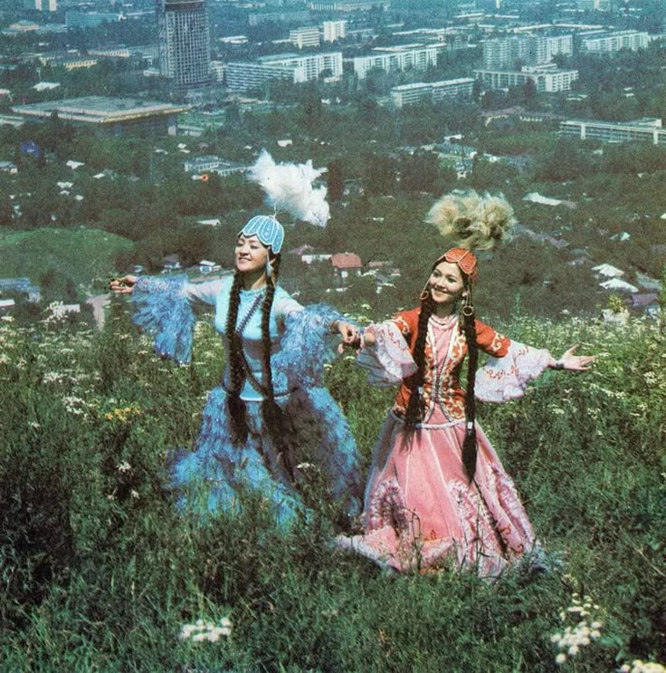
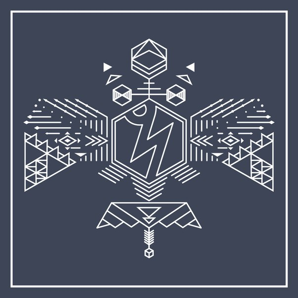
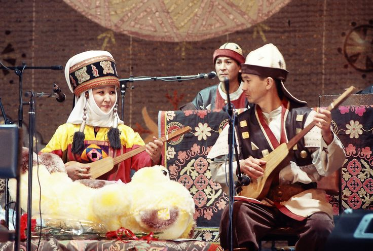

Culture · Music · Identity
01 — Culture
Kazakh songs are an important part of Kazakh culture. They show history, traditions, and feelings. People sing songs at weddings, celebrations, and family gatherings.

02 — Emotion
Songs can be happy, sad, or about love. They help people express emotions and share experiences — carrying meaning that transcends generations.
03 — Modern Sound
The band Ninety One is very popular in Kazakhstan. They combine modern pop music with Kazakh traditions, speaking to young audiences while honoring the roots of their culture.

04 — Featured Song
One of their famous songs is "Айыптама". This song talks about feelings, mistakes, and life lessons. Many young people enjoy it because it connects with their emotions — deeply and honestly.
Now playing
Айыптама — Ninety One
05 — Unity
Kazakh songs are not only music. They help people understand culture and feel connected with their history. Music brings people together and makes life more joyful.

Kazakh songs carry the memory of a people — their joys, their sorrows, and their unbreakable spirit.